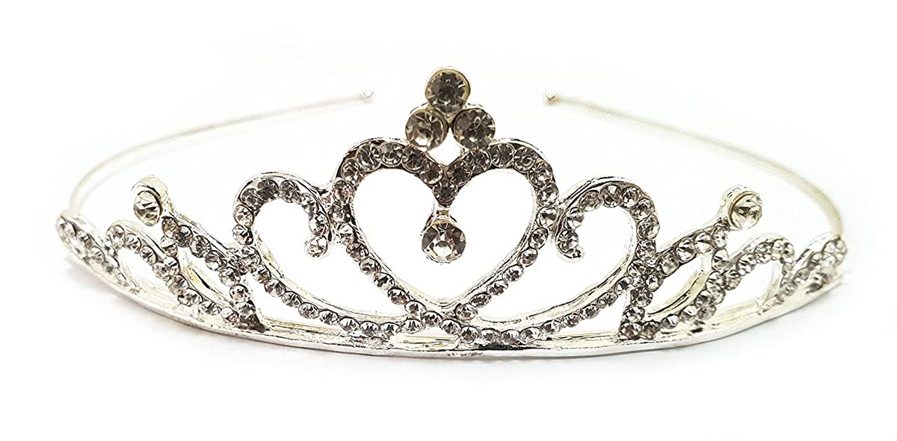
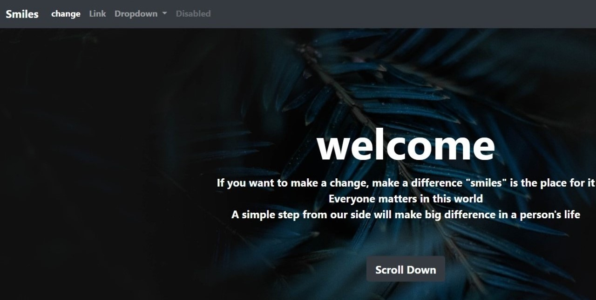
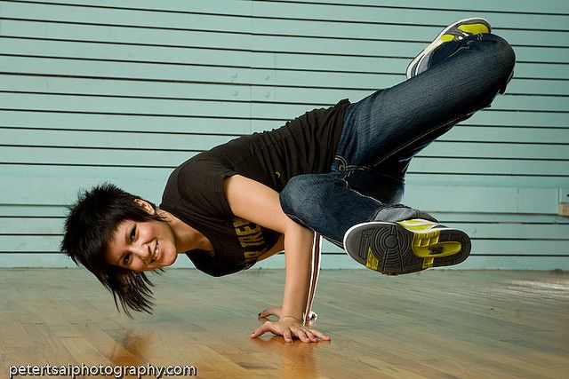

MY FIRST CROWN
I was crowned with responsibility and duty in my 11th grade.
Vested with the school badge and the moto in my heart, I carried forward with everything that I learnt being a leaader from my childhood.

MY FIRST DESIGN
Being the first year in college, and knowlegde of a beginner in the feild of design,
I managed to give a decent deisgn for our first project at Licet Pattarai, the Smart thermometer - Project Caliditas.
MY FIRST WEBSITE
Being amature in the whole new world of coding, We learnt to build a website from the scratch.
That gave me the spark of developing a website on my own.
https://sneha0110.github.io/mechking/

MY FIRST STAGE
I was is in my upper kindergarten when I first climbed the stage
I stood in fromt of hundreds of students and parents when i said my first words on the stage
From that day till date mic has been a great companian for me on stages.
MY FIRST TALK
Being in second year, and not a senior myself, I was given an opportunity to address my juniors.
The 30 mins talk that i gave ignited the spirit of public speaker in me.

MY FIRST DANCE
Being a person only behind the mic, once I stood in front of hundreds without a mic and also in a costume.
It being my first dance I've given my 101% effort. We even bagged the price. That stage made me the dancer I am today.
MY FIRST CHOREO
I was always an enthusiastic dancer.
But I thought it was time for me to step up my level. I stayed back, but never stopped my spark for dance, I worked on my moves.
I choreographed for a competition for the very first time.
My team managed all the heats I gave them.. and its all for good!! We bagged the title!
